Works13 artworks


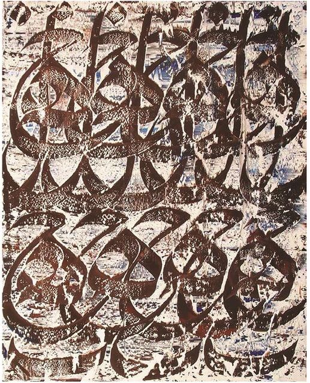

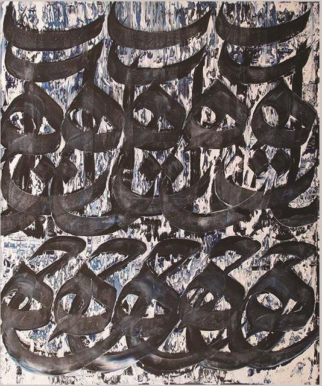

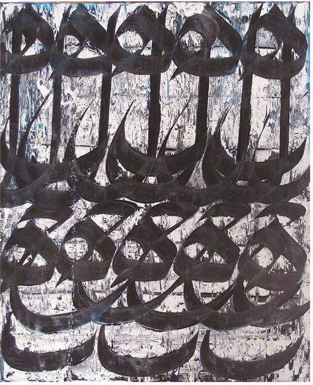

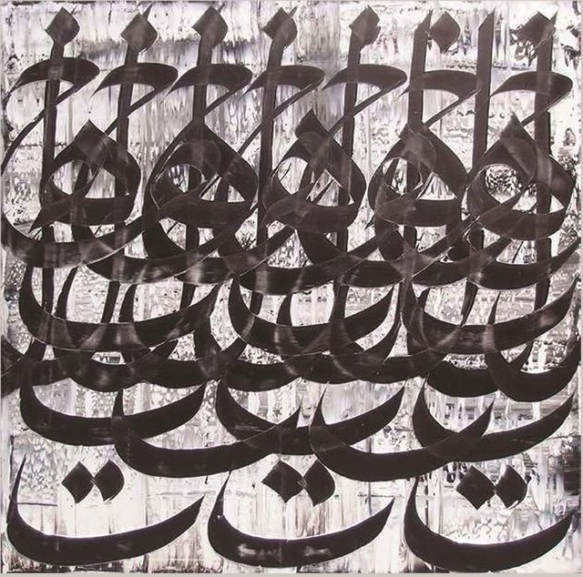

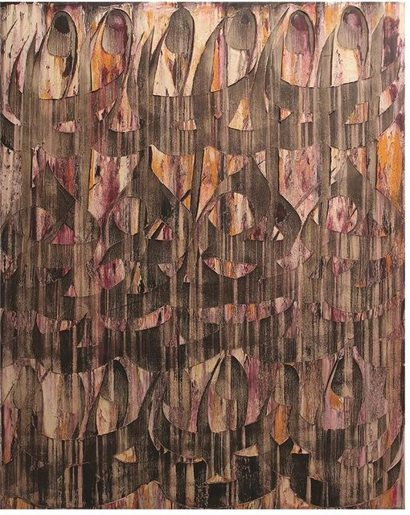

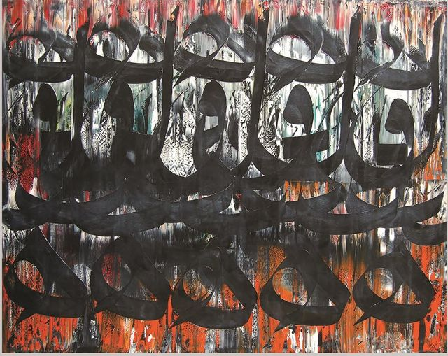

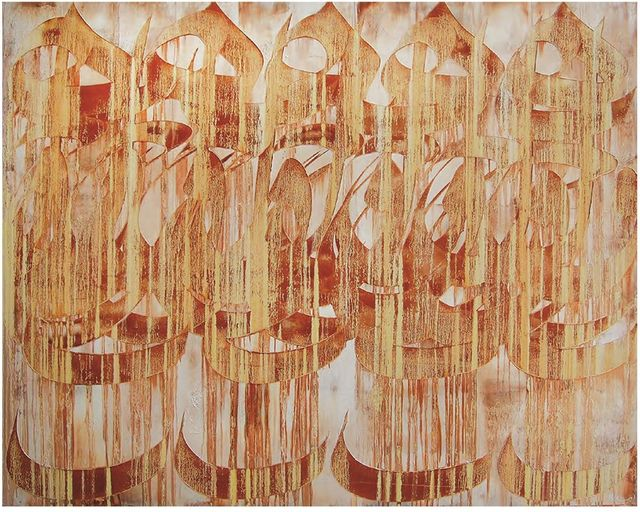

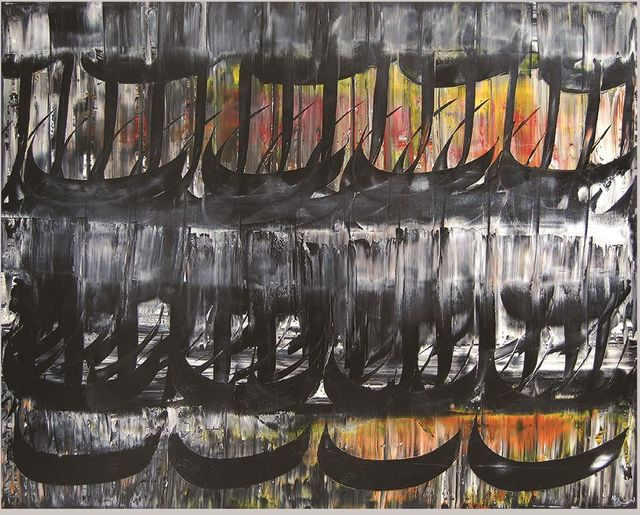

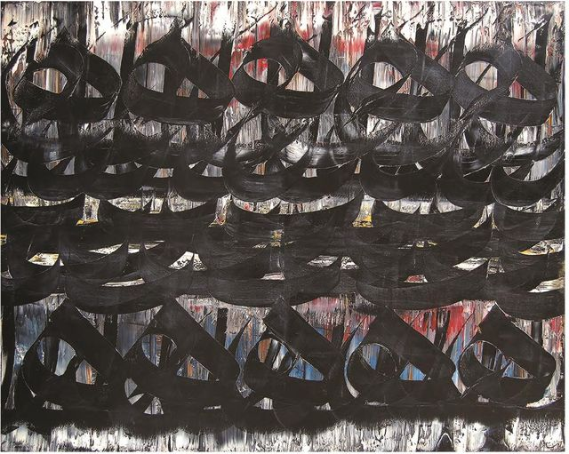

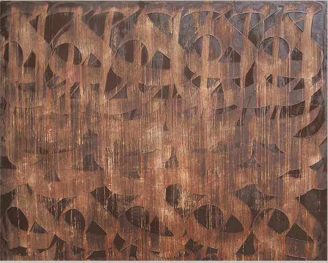

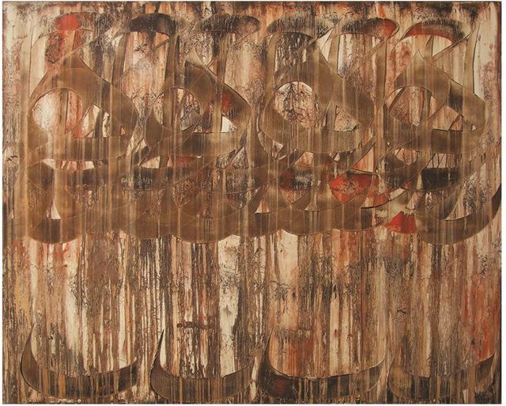

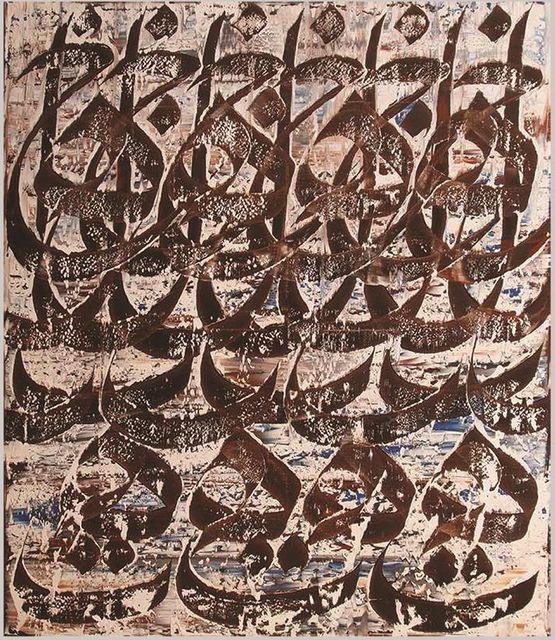
History of experienceBiography · education · exhibitions · awards
Education
- 1987High school diploma in graphic design|Tehran – Iran
- 1993B.A in painting, Islamic azad university|Tehran – Iran
- 1998M.A in painting, University of Art|Tehran – Iran
- Member of scientifical board Azad university, Faculty of Art
- Author of painting workshop (published by Ministry of Art)
- Member of Iranian society of painters
Exclusive exhibitions
- 1995Fereydoun Ave gallery
- 1996Fereydoun Ave gallery
- 1998Fereshteh gallery, Collection of plants
- 2000Barg gallery, 4painters, 4gallery
- 2001Azad designers gallery(painting on plates)
- 2001Iranian artist's house gallery, Installation and video art(city)
- 2002Iranian artist's house
- 2003Collage Iranian artist's house|Tehran – Iran
- 2004Square, Iranian artist's house|Tehran – Iran
- 2006Tehran Gallery
- 2007Calligraphy, Fereydoun Ave gallery
- 2008Calligraphy, Fereydoun Ave gallery
- 2008XVA gallery|Dubai
- 2009Henna art gallery|Tehran – Iran
- 2009Studio plano gallery|Venice
- 2010Henna art gallery|Tehran – Iran
- 2012Henna art gallery|Tehran – Iran
- 2012XVA gallery|Dubai
- 2013Calligraphy, Opera gallery|Paris
- 2014Flags, Opera gallery|London
International exhibition
- 1999Group exhibition, Iranian artist's, Jordan
- 2000+30 Group and Gunen group, Metropolitan|Tokyo
- 2000+30 Group and Gunen group, Kinza gallery|Tokyo
- 2001+30 Group, Paris triennale
- 2002Group exhibition, Video art|Venice
- 2003+30 Group exhibition, High art|Yerevan
- 2003Venice biennal, Video art
- 2004Paris group exhibition, Cite dea arts
- 2007Iranian artist's group exhibition, Video art(Elliot lake)|Canada
- 2007Iranian artist's group exhibition(Caravan)|Venice
- 2008Middle east artist's group in waterhouse & dodd|London
- 2009October group exhibition, Vila marbol zon, Vila terraglio|Italy
- 2009Iranian artist's, Nar gallery|USA
- 2010Group exhibition, Besharat gallery Atlanta|USA
- 2010Group exhibition, Art gallery|Venice
- 2012Group exhibition,Rira gallery|Dubai
- 2013Group exhibition, Tara gallery|Santa Monica-USA
- 2013Shang Hai biennal
- 2013Group exhibition, Nicolas Flamel gallery|Paris
- 2013Islamic art museum opening|Malaysia
- 2013Group exhibition(pop art), Nicolas Flamel gallery|Paris
- 2016Group exhibition, Total art gallery|Dubai
Iran group exhibition
- 1992First annual painting exhibition, Azad university
- 1992First group exhibition of soureh, Visual arts
- 1992shahed gallery
- 2002Adam & Eve, Art cultural center
- 2002+30 Group exhibition, Zanjan University|Zanjan – Iran
- 2002Jahan nama gallery
- 2003Video art, Azad designers gallery
- 2003Video art, Iranian artist's house gallery
- 200413 Group exhibition, Aban gallery
- 2004Installation & video art, Iranian artist's house gallery
- 2005Spiritual art exhibition, Niavaran art cultural center|Tehran – Iran
- 2005Mah gallery|Tehran – Iran
- 2005Atbin gallery|Tehran – Iran
- 2010Iranian artist's house gallery
- 2010Henna gallery|Tehran – Iran
- 2012Pardis gallery
- 20143nd Annual, Iranian artist's house gallery
- 2014A group of gilan painters, Laleh gallery|Tehran – Iran
- 2014Freedom of GAZA, Niavaran cultural center|Tehran – Iran
- 2014Shila gallery|Tehran – Iran
- 2014Annual group exhibition, Iranian society of painters, Iranian artist's house gallery
- 2014Cultural of peace, Ehsan Lajevardi gallery
- 2015Experience, Panjereh gallery|Tehran – Iran
- 2015Saba cultural center|Tehran – Iran
- 2015Melal gallery|Tehran – Iran
- 20152nd Group exhibition, cultural of peace, Niavaran art cultural center|Tehran – Iran
Source: the Sobhan Gallery artist catalogue “Fereydoon Omidi.pdf”.